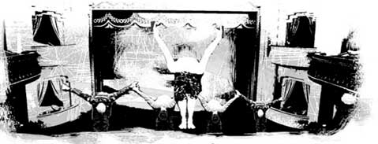
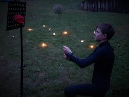
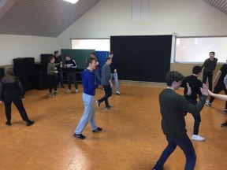
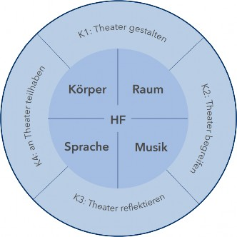
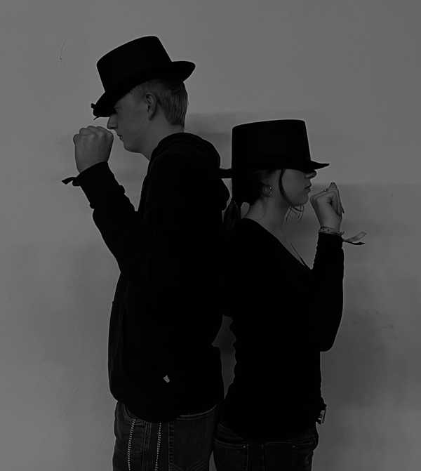
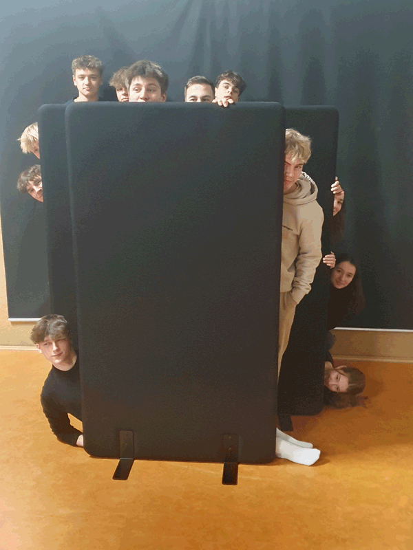

Darstellendes Spiel
"(...) der Mensch spielt nur, wo er in voller Bedeutung des Worts Mensch ist, und er ist nur da ganz Mensch, wo er spielt." Friedrich Schiller

… Willkommen auf der Seite der Fachschaft Darstellendes Spiel am Leibniz-Gymnasium Bad Schwartau!
Was ist „Darstellendes Spiel“?
Neben den traditionellen Fächern Kunst und Musik wird am Leibniz-Gymnasium seit 2008 das dem ästhetischen Bereich zugeordnete Fach „Darstellendes Spiel“ unterrichtet.
Das Theaterspiel gehört schon seit Jahrhunderten zu unserem kulturellen Leben. Die Theatererfahrung ist eine besondere Art des Erlebens, die eine andere Wirklichkeit schafft. Diese künstlerische Sicht auf die Welt zeichnet sich u.a. durch Kommunikation, Körperlichkeit, Rhythmus und Bildhaftigkeit aus. Theater ist außerdem immer eine Gruppenleistung. Dabei entsteht im Unterricht selten ein Theaterstück im konventionellen Sinne; vielmehr erhält der Spieler/ die Spielerin ein breites Angebot, sich in verschiedenen Spielsituationen einzubringen; z.B. bei der Koordination des Gruppenprozesses, als Regieführender, als Organisator einer kleinen öffentlichen Präsentation oder als Techniker oder Kostümbeschaffer.
Welchen Bildungsbeitrag leistet das Fach?
Es geht darum, die allgemeinbildenden und für die Persönlichkeitsentwicklung förderlichen Möglichkeiten des Darstellendes Spiels zu nutzen. Es bietet den Schüler/-innen die Möglichkeit, mithilfe der szenischen Gestaltung Handlungs- und Verhaltensmuster für ihre eigene Wirklichkeit zu erkunden und zu erproben. Dazu greift es auf viele Handlungselemente des Theaters wie der Arbeit an Mimik, Gestik, Verwendung von Sprache und Ähnlichem zurück.
Dies soll ihnen dabei helfen, sich in unterschiedlichen Situationen bestmöglich präsentieren zu können und jegliche Formen von Inszenierung – etwa auch in den Medien – zu erkennen und zu analysieren. Diese erworbenen Kenntnisse und Fähigkeiten sind auch in anderen Bereichen anwendbar, wie z.B. bei der Vorbereitung eines Referates, einem Vortrag oder einer Rede. Somit erwerben die Schülerinnen und Schüler ein Verständnis für Inszenierung und Theatralität, wodurch sie ebenso lernen, öffentliche und mediale Inszenierungen zu beurteilen und mit Theater, Film und Fernsehen reflektiert umzugehen.
Es gibt einige Schulabgängerinnen und -abgänger, die mittlerweile an Schauspiel- oder Musicalschulen studieren. Dies ist ein schöner Erfolg, jedoch hat das Fach ein noch größeres Ziel erreicht, wenn ein vorher vielleicht zurückhaltender Schüler von sich behaupten kann, es mache ihr / ihm nichts mehr aus, vor einer Gruppe zu stehen und dort etwas mit Überzeugung und Leidenschaft zu präsentieren.
Der zweite große Bereich besteht darin, das Fachwissen der Schülerinnen und Schüler zur jahrhundertealten Theaterkultur zu schulen und sie zu fachkundigen und interessierten Teilnehmern und Teilnehmerinnen der heutigen und zukünftigen Theaterkulturlandschaft auszubilden.
Was erwartet unsere Schülerinnen und Schüler im Unterricht?
Unterrichtsstunden werden meistens durch ein sogenanntes „Warming-up“ eingeleitet, bei dem durch Spiele und verschiedene Übungen Körper und Geist auf das nachfolgende, projektartige gestalterische Arbeiten eingestimmt werden sollen.
Es wird dann in den meisten Fällen eine Gestaltungsaufgabe geben, eine Präsentation und eine anschließende gemeinsame Auswertung.
Im Oberstufenunterricht erfolgt in der Eingangsphase eine Festigung der theaterästhetischen Mittel. Ausgehend von verschiedenen Etappen der Theatergeschichte lernen die Schüler und Schülerinnen in der Qualifikationsphase unterschiedliche Theatertheorien kennen, die sie in eigenen Szenen oft mit Aktualitätsbezug umsetzen. Mit der neuen OAVP kann DS auch mündliches Prüfungsfach im Abitur werden.
Darstellendes Spiel – Kompetenzen
Selbstkompetenz
Darstellendes Spiel bietet den Jugendlichen die Möglichkeit, sich selbst in verschiedenen Rollen zu erproben und sich eigener Vorstellungen, Motivationen und Interessen bewusster zu werden. Somit kann das Fach zur Selbstfindung und zum Abbau von Rollenfixierungen beitragen. Hier finden die Schüler einen Spielraum, in dem sie Mut zum Risiko, zum Experiment und zur Kreativität entwickeln können.
Die hierdurch erworbenen Fähigkeiten tragen zur sach- und situationsgerechten Bewältigung des Alltags und zu zukünftigen Situationen in Ausbildung und Beruf bei. Das bedeutet im Einzelnen, dass die Schüler in den Bereichen
Körper und Bewegung – Raum und Bild
- sich eigener körperlicher Anlagen und Bewegungsmöglichkeiten bewusst werden und unterschiedliche körperliche Ausdrucksformen erproben
- Gestik, Mimik und Bewegung als Gestaltungsmittel einsetzen
- unterschiedliche Orte bespielen und unterschiedliche Impulse des Spielortes wahrnehmen und umsetzen
- Positionen und Formationen im Raum erproben und umsetzen
- den bewussten Einsatz von Licht, Bühnenelementen, Kostümen, Masken, Requisiten und Medien umsetzen und begründen können
- Sprache und Sprechen trainieren und mit ihnen experimentieren
- Klang, Rhythmus und Musik als Impulse entdecken oder für ihre Inszenierungen einsetzen
Sach- und Methodenkompetenz
Im Bereich Theater begreifen, reflektieren und daran teilhaben
- sich mit dem Inhalt und der Gestaltung von Dramen und anderen Texten auseinandersetzen
- darstellerische Lösungen oder Übertragungen finden
- alternative Darstellungsmöglichkeiten erörtern
- Fachterminologie verwenden
- Regiestile unterscheiden und erproben
- Theaterepochen und Theaterformen erläutern und umsetzen
- sich insbesondere im zeitgenössischen, postdramatischen Theater Text- und Bildaussagen erschließen
- sich über fremde und eigene Darstellungen mit Kernproblemen des gesellschaftlichen Lebens auseinandersetzen
Sozialkompetenz
Für die Arbeit im Darstellenden Spiel ist eine funktionsfähige Gruppe von großer Bedeutung. Das gemeinsame Ziel erfordert Bereitschaft zur Zusammenarbeit und Rücksichtnahme. Unabhängig von den jeweiligen Inhalten, mit denen sich die Gruppe bei ihrer Arbeit auseinandersetzt, fördert das Fach in jeder Arbeitsphase die Kommunikations- und Teamfähigkeit. Das bedeutet im Einzelnen, dass die Schüler
- gemeinsame Problemstellungen finden und bearbeiten
- soziale und kulturelle Unterschiede in der Gruppe wahrnehmen und akzeptieren
- sich mit individuell unterschiedlichen Verhaltensmustern auseinandersetzen
- das Verhalten anderer im Spiel wahrnehmen und darauf eingehen
- die eigene Darstellung als Teil eines Ganzen begreifen
- anderen konzentriert zuschauen und zuhören
- eigene Vorstellungen einbringen und andere davon überzeugen
- Ergebnisse in der Gruppe kritisch reflektieren; Bereitschaft zeigen, Szenen zu überarbeiten
- ungewöhnliche Lösungen akzeptieren können
- in jeder Arbeitsphase zuverlässig und beständig mit den anderen zusammenarbeiten
Themen in der 6. Klasse:
Objekttheater
- vom Alltagsgestus zur Metaphorik der Dinge
- über Chaos, Ordnung und Gefühl
- vom Objekt zur Figur
Aktuelle projektbezogene Themen in der Oberstufe:
E: Grundkurs theatrale Ausdrucksformen und Stationen der Theatergeschichte
Q1: Kunst trifft Postdramatik: Installationen und Performances an Stationen nach dem Vorbild der Fluxus-Bewegung
Q1: Politische Kunst, politisches Theater. William Kentridge: WHY SHOULD I HESITATE. Umsetzungen zu politischer Kunst nach Brecht und Weiss
Q2: Theatersport und Improvisation nach Keith Johnstone
Ergebnisse aus dem Distanzunterricht während des Lockdowns:
- Keine Angst vor Überzeichnung! Bild-Inszenierungen nach dem Bildertheater von Robert Wilson
- Atmosphäre und neue Sphären: Verfremdungen im Poetischen Theater
Objekttheater in Klasse 6 zur Polyfunktionalität von Ausdrucksträgern:
- Analogien? Bikini-Frau und Großobjekt Klebebandabroller
- Objekttheater und die Kraft der Zerstörung nach Camille Boitel:
- Impressionen aus dem Bühnenkampf-Workshop mit dem Schauspieler Philipp Romann


Levke Stenman (Fachschaftsleitung Darstellendes Spiel)
Blog für Darstellendes Spiel
Darstellendes Spiel-Kurs Q2 lädt ein zur Werkschau “Entfesselt”
Wir, der Q2-DS-Kurs, laden herzlich zu unserer gesellschaftskritischen Werkschau “Entfesselt” ein.
Tauchen Sie ein in die düsteren Abgründe der amerikanischen Geschichte. Wir enthüllen die schmerzhaften Geheimnisse vergangener Zeiten und ziehen Parallelen zur traurigen Aktualität unserer Welt.
"Entfesselt" erzählt von der brutalen Realität des Sklavenhandels, der Versklavung und der Gewalt, die Frauen und schwarze Menschen ertragen mussten. Wir scheuen uns nicht davor, die grausame Wahrheit zu zeigen, und wir stellen unbequeme Fragen über die noch heute bestehenden Missstände.
Doch inmitten der Dunkelheit erleuchtet ein Funke Hoffnung. "Entfesselt" ist nicht nur eine postmoderne Collage über Leid und Unterdrückung, sondern auch eine Geschichte des Widerstands und der Liebe. Unsere Protagonisten kämpfen verzweifelt für Gerechtigkeit und Freiheit, und in ihrem Mut und ihrer Entschlossenheit finden sie Kraft, sich gegen die Unmenschlichkeit zu erheben.
Die Liebesgeschichte, die inmitten des Chaos' und der Verzweiflung bestehen bleibt, lässt uns erkennen, dass selbst in den dunkelsten Stunden die Liebe als Lichtquelle dienen kann.
"Entfesselt" ist mehr als nur ein Theaterstück. Es ist eine bewegende Szenenfolge, die Sie zutiefst berühren und zum Nachdenken anregen wird. Treten Sie ein in unsere Welt und lassen Sie sich von der Kraft des Widerstands und der Sehnsucht nach Freiheit verzaubern.
Neben dem Schauspiel zeigen wir auch choreografische und tänzerische Parts, die den Figuren und Themen Ausdruck verleihen und sie zum Leben erwecken sollen.
Seien Sie bereit, sich von "Entfesselt" mitreißen zu lassen – eine Geschichte, welche auch heute noch von großer Relevanz ist. Wir freuen uns auf Sie/euch!
Datum: 29. Februar 2024
Einlass: 18:30 Uhr
Beginn: 19:00 Uhr
Ort: Leibniz-Gymnasium, Lübecker Straße 75, 23611 Bad Schwartau
Ankündigungsplakat: Bitte HIER klicken
Lavinia Frase (Q2c)

Dramaturg Oliver Held im Gespräch zu „Herkunft“
50 Schülerinnen und Schüler der Profilseminare Geographie und der DSP-Kurs waren am 11.01.2024 mit Frau von der Heyde und Frau Frädrich in dem bewegenden Stück „Herkunft“ nach dem Roman von Saša Stanisic im Lübecker Theater.
Dieser hat für den Roman 2019 den Deutschen Buchpreis erhalten.
Er verarbeitet darin seine eigene Biografie, also seine Jugend im ehemaligen Jugoslawien, das er wegen des Krieges verlassen musste, sowie sein Leben in Deutschland nach der Flucht.
Nun, am 14.02.2024, kam uns der Dramaturg des Stückes, Oliver Held, gemeinsam mit der Theaterpädagogin Frieda Stahmer und dem FsJler besuchen. Wir erfuhren, wieso das Stück ausgewählt wurde und wie Entscheidungen in der Inszenierung getroffen wurden. Außerdem begeisterte uns Oliver Held mit lebendigen Erzählungen von den Proben und davon, wie inspirierend das Theaterdasein schon immer für ihn war.
Katharina Frädrich (für die DS-Fachschaft)


Schwarze Stellwände für den DS-Raum
Gestern konnte Frau von der Heyde mit ein paar Achtklässlerinnen und Achtklässlern zwei stabile schwarze Stellwände im DS-Raum aufbauen.
Derartige Stellwände hatten wir uns schon lange gewünscht! Dank einer großzügigen Spende von Kiwanis konnten wir diese nun bei einem Anbieter aus Süddeutschland anfertigen lassen.
Nun können unsere Darstellerinnen und Darsteller auch einmal in "Deckung" gehen oder eine Stimme aus dem "Off" ertönen lassen.
Vielen Dank an den Kiwanis Club Bad Schwartau!
Levke Stenman (für die Fachschaft Darstellendes Spiel)

Kohlkopf und Discokugel - Die 6b war im Theater Lübeck
Am vergangenen Mittwoch wanderten wir von unserer Schule aus los. Unser Ziel war das Theater in Lübeck, wo gerade das Stück "Gangsta-Oma" gespielt wird.
Nach der Aufführung stand ein gemeinsames Gespräch mit den zwei Hauptdarstellern und mit der Theaterpädagogin Kathrin Oetting auf dem Programm, zu dem die Klasse eingeladen worden war.
Die Wanderung nach Lübeck bot die Möglichkeit für kurzweiligen Austausch untereinander. Spontan haben wir noch einen netten Zwischenstopp eingelegt, um die Hühner unserer Zwillinge einmal kennenzulernen. Die ortsansässigen Schülerinnen und Schüler verrieten uns zusätzlich noch einen Geheimweg.
Im Anschluss an das unterhaltsame Stück begleitete Frau Oetting uns zum "Studio" des Theaters. Dort gab es zunächst ein Aufwärmspiel mit Posen und Textteilen aus dem Stück. Viele Schülerinnen und Schüler haben sich an dem anschließenden Gespräch mit den zwei Darstellern beteiligt. Es wurden gegenseitig Fragen gestellt, bei denen es recht ausgiebig um das extravagante Bühnenbild ging, und zwar um einen überdimensionierten Kohlkopf, in dem sich eine ebenso riesige Discokugel verbarg.
Anschließend ging es noch auf den Weihnachtsmarkt, um den Ausflug gemütlich ausklingen zu lassen.
Levke Stenman (Klassenleitung 6b)


Theateraufführung am Leibniz: Freiheit - unser Traum
Am Mittwoch, den 12. Juli um 19:00 Uhr war es so weit: Das Theaterstück „Wovon wir träumen, wovon wir träumten - über die Überwindung von totalitären Systemen“ vom Profilseminarkurs zu Geschichte wurde vorgespielt.
Karten waren nur über den direkten Kontakt zu den Vorführenden zu ergattern - sehr rar und dementsprechend sehr beliebt.
Das etwa 70-minütige Theaterstück wurde durch die 15 Schülerinnen und Schüler des Kurses im gesamten letzten Schuljahr vorbereitet. Während im ersten Halbjahr erst einmal die theoretischen Grundlagen gelegt wurden und sich intensiv mit der Theaterform, dem sogenannten Dokumentartheater, und den Theaterregisseuren, welche solche Theaterstücke inszeniert haben, beschäftigt wurde, ging es dann im zweiten Halbjahr an das kreative Schaffen - in einem intensiven und arbeitsaufwendigen Prozess wurde das Theaterstück entwickelt.
Das Dokumentartheater macht eines besonders: Zur Bearbeitung wurde sich auf entsprechend viel auf Quellenmaterial gestützt, von dem dann auch ein Teil in der Aufführung vorgeführt und gezeigt wurde. Damit gewinnt das Theaterstück noch einmal eine ganz neue Dynamik, wenn sich so zum Beispiel Schauspiel mit kurzen Videoclips und präsentierten Plakaten abwechselt.
Die Themensuche gestaltete sich zum Anfang des Projektes als schwierig - im positiven Sinne: Von Schülerseiten wurden zahlreiche Ideen zu zahlreichen wichtigen historischen Zeiten genannt, welche gar nicht alle unter einen Hut zu bringen gewesen wären - also musste fleißig abgestimmt werden, doch es kam ein kleines Problem auf: Zwischen den beiden beliebtesten Themen, der Beschäftigung mit dem Mauerfall und der aktuellen Situation im Iran, herrschte Gleichstand - doch, wo ein Problem besteht, gibt es auch eine Lösung: Warum beschäftigt man sich nicht einfach mit beiden Themen?
Diese Themenidee, die Thematik des Mauerfalls und der Situation im Iran, machte auch gleich einen gewissen Aufbau des Theaterstückes nötig: Um die beiden Themen immer wieder zu verbinden, sollten immer wieder Parallelen zwischen den beiden Thematiken aufgezeigt werden.
Es zeigte sich entsprechende Überlappungen in den Thematiken, die wir nutzen konnten; so gab es im Iran zahlreiche Demonstrationen, aber auch in der Schlussphase der DDR. So konnten wir unter anderem die von den Demonstrierenden gezeigten Plakate gegenüberstellen und so die verschiedenen Thematiken gegenüberstellen. Gleichwohl zeigte sich aber immer wieder eine gemeinsame Grundthematik. Immer wieder ging es um eines: Freiheit.
Als dann der Tag der Aufführung kam, wurde die Angst unter den Schauspielenden immer größer. Man hatte Angst, seinen Text zwischendurch zu vergessen oder dass etwas an der Technik nicht funktionierte.
Doch während der Aufführung zeigte sich, dass die Sorgen größtenteils unberechtigt waren - und noch viel mehr: Am Ende der Aufführung zeigte sich das Publikum begeistert von unserem Stück - die Reaktionen fielen äußerst positiv aus - es fielen oft Wörter wie „klasse“ und „super“; ebenso wurde sich von den anwesenden Lehrkräften gleich gewünscht, das Theaterstück doch einmal ihren zukünftigen Profilseminarkursen vorzuspielen und diesen damit ein direktes Beispiel zu zeigen sowie auch für eigene Projekte im kommenden Schuljahr zu motivieren.
Das Feedback machte uns als Kurs natürlich glücklich. Und so kann man zu diesem Abend wohl sagen, dass, auch wenn einige von uns vorher Bedenken oder Angst hatten, die Aufführung ein voller Erfolg war.
Raven Schult (Q1b)